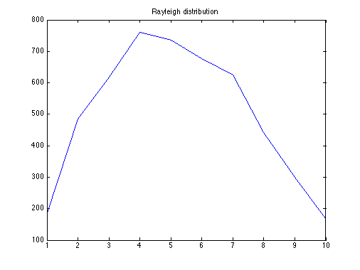
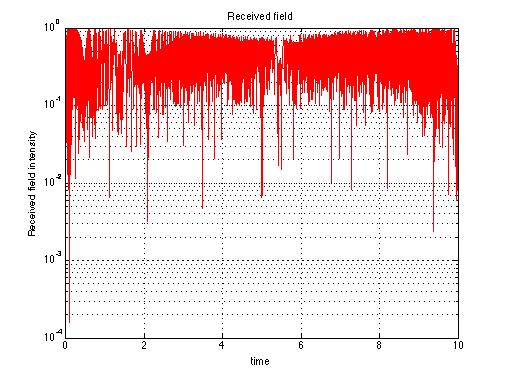
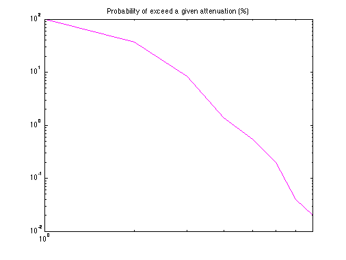

Contents
Rayleigh Ditribution resulting from the Simulation of Fading Channel
Copyright 2007 Telecommunications Lab
N=5000; %Number of paths t=0.0001:10/N:10; %Time range fc=900*10.^6; %Carrier frequency wc=2*pi*fc; v=30/3600; %Receiver speed[km/h] c=300*10^3; %Light speed wm=wc*(v/c); %Maximum shift fm=wm/(2*pi); %Doppler shift for i=1:N A(i)=(2*pi/N)*i; %Azimuthal angles wn(i)=wm*cos(A(i)); O(i)=(pi*i)/(N+1); xc(i)=2*cos(wn(i)*t(i)).*cos(O(i))+cos(wm*t(i)); xs(i)=2*cos(wn(i)*t(i)).*sin(O(i)); T(i)=(1/(2*N+1)^0.5).*(xc(i)+j*xs(i));%Complex envelope end M=mean(abs(T)); %Mean MdB=20*log10(M); TdB=floor(20*log10(abs(T))); %Field [dB] z1=hist(abs(T)); z=hist(TdB,9); n=0; for k=1:9 n=n+z(k); end for k=1:9 P(k)=z(k)/n; end f(1)=P(1); for x=2:9 f(x)=f(x-1)+P(x); F(10-x)=f(x); end
Distribution chart
plot(z1)
title('Rayleigh distribution');
 Received field
semilogy(t,abs(T)/max(abs(T)),'r') %Fading graphic title('Received field'); ylabel('Received field intensity'); xlabel('time'); grid on
Probability of exceed a given attenuation (%)
loglog(100*F,'m');%Indicates the probability of exceed a given attenuation title('Probability of exceed a given attenuation (%)');